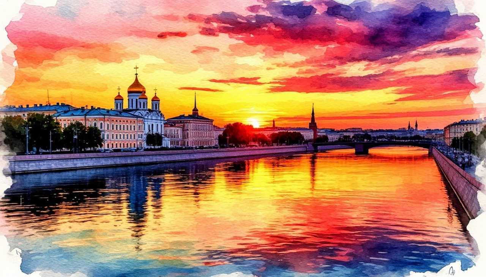

Нижний-Новгород: столица закатов.

Даты тура: 23 - 24 мая | 27 - 28 июня | 11 - 12 июля | 25 - 26 июля | 8 - 9 августа | 22 - 23 августа | 5 - 6 сентября
Стоимость тура:
- 17 500 р. - взрослый
- 17 300р. - пенсионеры/школьники
- 20 500 р./чел - одноместное размещение
По программе:
- - экскурсия по территории Нижегородского Кремля
- - экскурсия в музей Рукавишниковых
- - обзорная экскурсия по Нижнему Новгороду
- - посещение Строгановской (Рождественской) церкови
- - экскурсия в музей истории Газ
- - теплоходная прогулка
Программа тура:
1 день:
- 04-00- выезд из Костромы от ТРЦ "РИО"
- Прибытие в Нижний Новгород
- Экскурсия по территории Нижегородского Кремля
- На территории кирпичной крепости с 13 башнями вы увидите Михайло-Архангельский собор, вечный огонь и мемориальный комплекс, павших героев в Великую Отечественную войну обелиск Минину и Пожарскому. С каждым шагом узнаете, как кремль переживал различные исторические периоды.
- Обед в кафе города
- Экскурсия в музей Рукавишниковых
- Вы осмотрите парадные залы, роскошно украшенные лепниной и живописью, воссозданное убранство личных комнат с мебелью и предметами купеческого быта XIX века. Также представлены тематические выставки, связанные с историей Нижнего Новгорода и его жителями.
- Заселение в гостиницу. Свободное время.
2 день:
- Завтрак в гостинице. Освобождение номеров.
- Обзорная экскурсия по городу
- Прогулка по улице Большая Покровская. Вы полюбуетесь доходными домами и купеческими особняками, прикоснётесь к их историям. Оцените символ Покровки — величественное здание Центрального банка, похожее на сказочный замок.
- АКВАПАРК OCEANIS входит в число крупнейших крытых аквапарков России!
- Проедете по историческим улочкам, сохранившим красоту и былое величие: Рождественской, Ильинской, а также Верхне-Волжской и Нижне-Волжской набережным.
- Посетите Строгановскую (Рождественскую) церковь — памятник архитектуры 17 века
- Экскурсия в музей истории Газ
- В музее представлены раритетные автомобили, архивы, мультимедийные экспонаты и интерактивные стенды, которые позволяют посетителям «прикоснуться» к истории.
- Многие из местных машин — «звезды» кино и массовых мероприятий. Их снимали в таких фильмах как «Бриллиантовая рука», «Три тополя на Плющихе», «Берегись автомобиля», «Три плюс два» и других, используют для участия в парадах и выставках.
- Обед в кафе города
- Теплоходная прогулка
- Путешествие по реке Волге и Оке позволяет ощутить величие водных просторов и архитектурных памятников, которые невозможно увидеть с берега.
- Уникальная возможность увидеть город с нового ракурса, насладиться живописными видами набережных и исторических достопримечательностей.
- Выезд домой
В стоимость тура входит:
- - проживание в гостинице*
- * Гостиница "Заречная" (Номер реестровой записи: С522025008331)
- - питание: 1 завтрак + 2 обеда
- - услуги гида-экскурсовода
- - экскурсионная программа
- - автобусное обслуживание по программе тура
- Для бронирования необходимы данные паспорта РФ и свидетельства о рождении, если с вами путешествуют дети
- Предоплата – 50% от стоимости тура. Остаток за 30 дней до даты выезда.
- Любой тур можно оформить не выходя из дома. Подробнее: Тут
Стоимость тура не зафиксированы и могут быть изменены в большую или меньшую сторону в зависимости от уровня спроса в любой момент.
Время начала экскурсий и их порядок указано ориентировочно.
Фирма-исполнитель оставляет за собой право замены экскурсий без уменьшения общего объема экскурсионной программы.
По вопросам бронирования обращайтесь: